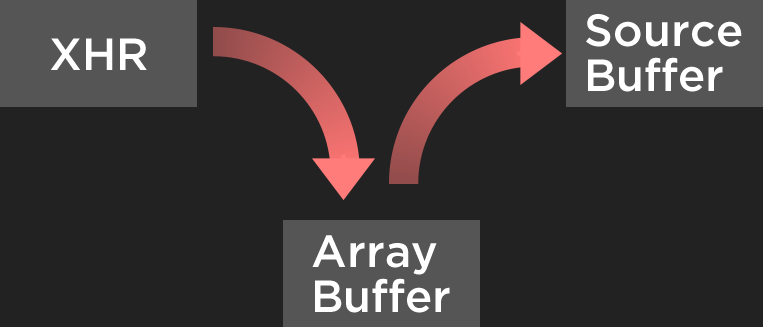

Other browser APIs
that are changing video
What you've heard of elsewhere...
- HTML5 video
- Media Source Extensions (MSE)
- Encrypted Media Extensions (EME)
- WebRTC
Normal HTML5 Video

HTML5 Video + MSE

HTML5 Video + MSE + EME

Other
STREAMS
Stream code
readableStream.pipeTo(new WritableStream({
write(chunk) {
console.log("Chunk received", chunk);
},
close() {
console.log("All data successfully read!");
},
abort(r) {
console.error("Something went wrong!", e);
}
}));
Streaming Video Without Streams
Streaming Video With Streams
Fetch + Streams
fetch('/video-segment.mp4').then(function(response) {
var responseStream = response.body.getReader();
sourceBuffer.appendStream(responseStream);
});
Pipe Chain
What can we do with Streams?
- Faster start times and seek times
- Transmuxing
- Real-time video effects
- Transcoding
Streams (via Fetch) support
Service Workers
Service Workers: What are they?
What can we do with Service Workers?
- Store video for offline viewing, DVR
- Share content between pages
- Pre-fetching content the user is likely to need
- Transmuxing/Transcoding
Web Components
Web Component Specs
- Custom Elements
- Shadow Dom
- Templates
- HTML Imports
Custom Elements
document.registerElement('my-element', MyElement);
// html
X-Gif
{kind=link}
“Everything talks HTML”
x-Playlist
<x-playlist loop>
</x-playlist>
Browser Support for WebComponents.js
Platform Integrations
Network Info API
Connection type:
(try changing your connection)Battery Status
Battery status:
Battery charging:
Vibration API
Other other APIs
ConnectionType: Spaceship Wifi
fetch('war.vptd')